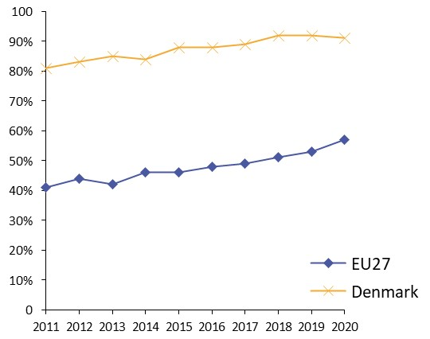
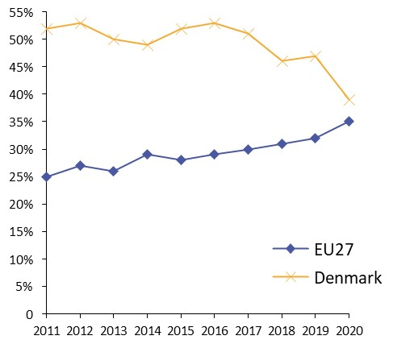
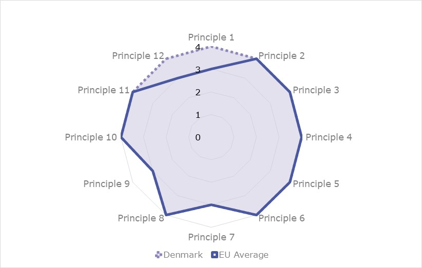
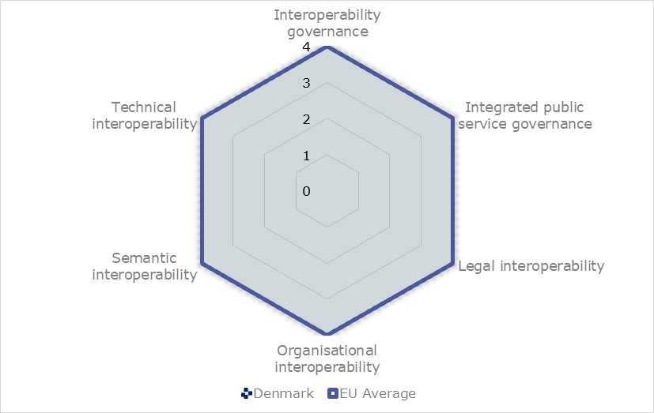
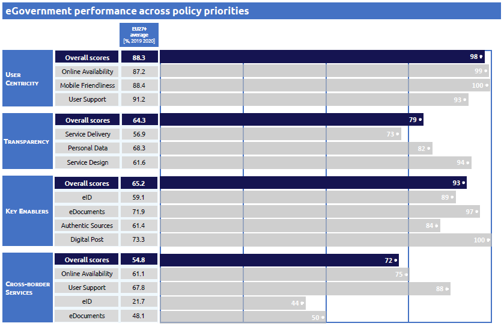

ISA2
Digital Public Administration factsheet 2021
Denmark
2 Digital Public Administration Highlights 10
3 Digital Public Administration Political Communications 12
4 Digital Public Administration Legislation 20
5 Digital Public Administration Governance 26
6 Digital Public Administration Infrastructure 33
7 Cross-border Digital Public Administration Services for Citizens and Businesses 42
Please note that the data collection exercise for the update of the 2021 edition of the Digital Public Administration factsheets took place between March and June 2021. Therefore, the information contained in this document reflects this specific timeframe.

Country
Profile
1
Population: 5 814 422 inhabitants (2020)
GDP at market prices: 311 726 million (2020)
GDP per inhabitant in PPS (Purchasing Power Standard EU 27=100): 136 (2020)
GDP growth rate: -2.7% (2020)
Inflation rate: 0.3% (2020)
Unemployment rate: 5.6% (2020)
General government gross debt (Percentage of GDP): 42.2% (2020)
General government deficit/surplus (Percentage of GDP): -1.1% (2020)
Area: 42 924 km2
Capital city: Copenhagen
Official EU language: Danish
Currency: DKK
Source: Eurostat (Last update: 23 July 2021)
The following graphs present data for the latest Digital Public Administration Indicators for Denmark compared to the EU average. Statistical indicators in this section reflect those of Eurostat at the time the Edition is being prepared.
Percentage of individuals using the internet for interacting with public authorities in Denmark  | Percentage of individuals using the internet for obtaining information from public authorities in Denmark
| ||
Percentage of individuals using the internet for downloading official forms from public authorities in Denmark  | Percentage of individuals using the internet for sending filled forms to public authorities in Denmark
| ||
In 2017, the European Commission published the European Interoperability Framework (EIF) to give specific guidance on how to set up interoperable digital public services through a set of 47 recommendations. The picture below represents the three pillars of the EIF around which the EIF Monitoring Mechanism was built to evaluate the level of implementation of the EIF within the Member States. It is based on a set of 71 Key Performance Indicators (KPIs) clustered within the three main pillars of the EIF (Principles, Layers and Conceptual model), outlined below.

Source: European Interoperability Framework Monitoring Mechanism 2020
For each of the three pillars, a different scoreboard was created to breakdown the results into their main thematic areas (i.e. the 12 principles of interoperability, the interoperability layers and the components of the conceptual model). The thematic areas are evaluated on a scale from one to four, where one means a lower level of implementation and 4 means a higher level of implementation. The graphs below show the result of the second EIF Monitoring Mechanism data collection exercise for Denmark in 2020.

Source: European Interoperability Framework Monitoring Mechanism 2020
Denmark’s results in Scoreboard 1 show an overall good implementation of the EIF Principles, scoring above the European average for Principle 1 (Subsidiarity and Proportionality) and 12 (Assessment of Effectiveness and Efficiency). Areas of improvements are concentrated in the Principles 7 (Inclusion and Accessibility) and 9 (Multilingualism) for which the score of 3 shows an upper-medium performance in the implementation of corresponding recommendations. Indeed, the use of e-accessibility specifications to ensure all public services are accessible to all citizens, (Principle 7 – Recommendation 14) and the implementation of multilingualism support in information systems (Principle 9 – Recommendation 16) are partial and could be bettered to reach the maximum score of 4.

Source: European Interoperability Framework Monitoring Mechanism 2020
The Danish results for the implementation of interoperability layers assessed for Scoreboard 2 show a high performance with scores of 4 in all principles. The only potential area of improvement to enhance the country’s implementation of the recommendations under Scoreboard 2 are concentrated in the areas of interoperability governance and organisational interoperability. Specifically, the score of 3 for Denmark in Recommendation 22, stating that public administrations should use a structured, transparent, objective and common approach to assessing and selecting standards and specifications, and in Recommendation 29, calling for clarification and formalisation or organisational relationships for establishing and operating public services, could be improved for a total implementation of interoperability layers for Denmark.

Source: European Interoperability Framework Monitoring Mechanism 2020
Denmark’s scores assessing the Conceptual Model in Scoreboard 3 show a high performance in the implementation of the majority of recommendations associated with the conceptual model itself, the internal and external information sources and services, base registries, open data and catalogues. The only area for improvement is on security and privacy, more specifically in the implementation of Recommendation 47, on the use of Trust Services operating in accordance to the Regulation on eID, and the absence of Trust Services as mechanisms that ensure secure and protected data exchange in public services (Recommendation 47) which hinders Denmark’s score on the Security and Privacy section.
Additional information on Denmark’s results on the EIF Monitoring Mechanism is available online through interactive dashboards.
The graph below presents the main highlights of the latest eGovernment Benchmark Report, an assessment of eGovernment services in 36 countries: the 27 European Union Member States, as well as Iceland, Norway, Montenegro, the Republic of Serbia, Switzerland, Turkey, the United Kingdom, Albania and Macedonia (referred to as the EU27+).
The study evaluates online public services on four dimensions:
The 2021 report presents the biennial results, achieved over the past two years of measurement of all eight life events used to measure the above-mentioned key dimensions. More specifically, these life events are divided between six ‘Citizen life events’ (Career, Studying, Family life, measured in 2020, and Starting a small claim procedure, Moving, Owning a car, all measured in 2019) and two ‘Business life events’ (Business start-up, measured in 2020, and Regular business operations, measured in 2019).

Source: eGovernment Benchmark Report 2021 Country Factsheet

Digital Public Administration Highlights
2
Digital Public Administration Political Communications
In mid-March 2021, Denmark launched a Digitalisation Partnership in order to bring the ideas of top managers, employers, and experts from both the public and private sector into national and public digitalisation efforts. Furthermore, Denmark launched a new tech diplomacy strategy showing commitment to deploy tech diplomacy with the ambition to embed democratic values in the international digital development.
Digital Public Administration Legislation
In 2021, the government has evaluated the work with digital-ready legislation conducted over the last three years. The review indicates there is an increased focus on the application of new digital possibilities, and that several ministries find it advantageous to describe and incorporate digital solutions and possibilities in the early stages of the political decision-making process. Additionally, the COVID-19 pandemic has underlined the benefits of digital-ready legislation and an evolved digital infrastructure.
Digital Public Administration Governance
Since 2018, the National ICT Council has conducted 28 reviews of central government’s ICT system portfolios. The central government institutions have mapped their ICT systems and created an overview of the challenges within each portfolio. By the end of 2021, all central government institutions will have mapped their system portfolios. This will provide an overview of the governmental ICT systems and the state of these. The overview will form the basis of future initiatives to improve governmental ICT management.
Digital Public Administration Infrastructure
The Danish public digital infrastructure has shown its worth during the COVID-19 pandemic. The digital infrastructure has enabled public service to remain at a high level even with a high degree of remote work within the state, regions and municipalities. Furthermore, the government has launched a range of new digital services to cope with COVID-19, including a contact-tracing app and digital booking of tests and vaccinations.
Moreover, since 24 November 2020, Danish citizens have been able to download their driving license in a new app and leave their physical driving license at home. With more than 500 000 downloads of the new app in the 24 hours after release, almost 750 000 in the first week, and now over 1 million, people in Denmark have quickly adopted the new digital driving license.

Digital Public Administration Political Communications
3
Berlin Declaration on Digital Society and Value-Based Digital Government
In December 2020, the Danish government signed the Berlin Declaration on Digital Society and Value-Based Digital Government, thus re-affirming its commitment – together with other EU Member States – to foster digital transformation in order to allow citizens and businesses to harness the benefits and opportunities offered by modern digital technologies. The Declaration aims to contribute to a value-based digital transformation by addressing and strengthening digital participation and digital inclusion in European societies.
Digital Public Administration and COVID-19
The public digital infrastructure has shown its worth during the COVID-19 pandemic. The digital infrastructure has enabled public services to remain at a high level even with a high degree of remote work within the State, regions and municipalities. Furthermore, the government has launched a range of new digital services to cope with COVID-19, including a contact-tracing app and the digital booking of tests and vaccines.
Thanks to digital-ready legislation and an evolved digital infrastructure, the central government was able to process COVID-19 stimulus checks addressed to 2.2 million recipients in a fully automatic mode and in less than eight days.
Furthermore, another 2.1 million residents were able to digitally apply for and receive early holiday allowance for a total value of approximately EUR 14.5 billion. The first round of the two holiday allowance pay-outs (EUR 7 billion in October 2020) resulted in a monthly increase in retail spending of 8.2% leading to the highest consumer spending index ever in the month of October 2020.
Digitalisation Partnership for Denmark's Future
In the spring of 2021, the Danish government launched a Digitalisation Partnership. The partnership consists of top managers and experts from the Danish business community, the research community, civil society, stakeholders from the labour market and the municipal and regional administrative level. They will discuss and put forward recommendations on how Denmark should use the opportunities of digitalisation in the future.
The recommendations of the partnership will focus on how Denmark can leverage the opportunities of the digital transition, while preserving the best from Denmark's welfare society. The relation between digital transition and welfare, equality, growth and employment are some of the key areas the partnership will address.
The ambition is to make sure that all citizens, workers and private companies will have the opportunity to benefit from and take advantage of the increased digitalisation of the Danish society.
The partnership will also take into account other countries' experiences in the field of digitalisation, as well as digitalisation initiatives from the EU.
National Cyber and Information Security Strategy
The government is planning on launching a new national strategy for cyber and information security in 2021 to replace the current 2018−2021 strategy. The Danish government is currently building the strategy around four key themes:
This new national strategy is expected to increase the level of ambition both as regards the efforts of the industry and in relation to the national cross-sectoral commitments.
The strategy is developed by an inter-ministerial steering group with participation from all ministries. The chairmanship of the steering group is handled by the Danish Agency for Digitisation and the Centre for Cyber Security. Moreover, the National Cyber Security Council and the Business Partnership for Increased IT Security will be involved in order to provide their input to the strategy's overarching themes and possibly also to specific initiatives.
Strategy for Denmark’s Tech Diplomacy 2021−2023
In 2017, the Danish government appointed a Tech Ambassador with the aim to strengthen its access to, relations with and influence towards large tech companies across the world. Tech companies such as Google, Apple, Amazon, Facebook, Tencent and Alibaba have an economic strength comparable to that of entire countries and affect our everyday lives. Diplomacy should take into account this reality.
In February 2021, the Danish government launched the Strategy for Denmark’s Tech Diplomacy 2021−2023. The strategy considers that democratic countries need to muster the courage to design and take charge of a framework for a responsible technological future, rather than leaving this task to a small cadre of companies.
The strategy comprises three principles that are central to future technological development:
Strategy for Denmark’s Digital Growth
The Strategy for Denmark’s Digital Growth encompasses a series of goals and actions fostering the digital transformation of Danish commerce and industry. More specifically, the strategy consists of 38 initiatives, allocating a total of DDK 1 billion from 2018 to 2025 in order to support the digital transformation of small and medium-sized enterprises. Subsequently, the strategy foresees a DKK 75 million investment per year. Some of the key actions that the strategy includes are the following:
Guidelines on How to Make Legislation Ready for Digitisation
A broad political agreement was reached in January 2018, requiring all legislation proposed after 1 July 2018 to comply with seven principles for digital-ready legislation. The Guidelines on How to Make Legislation Digital-Ready in particular outline seven principles for digital-ready legislation and how to apply them in the legislative process.
Additionally, all proposed legislation must be assessed for potential implementation impacts in terms of project risk, organisational changes, data protection and citizens’ rights. The findings must be documented in the legislative proposal and mitigating measures should be described.
To ensure that legislation is digital-ready, every legislative proposal is screened for compliance with the guidelines and consultation responses are submitted to the responsible ministries by a unit established within the Ministry of Finance.
In support of this approach, a course in digital-ready policymaking will be generally available to legislative drafters and policy officers in government departments by the summer of 2021.
A report documenting the initiatives results was published in May 2021.
Public Sector Digitisation Strategy: a Stronger and More Secure Digital Denmark (2016–2020)
The Common Public Sector Digitisation Strategy 2016–2020 (also known as Digital Strategy) was agreed upon by the Danish government, Local Government Denmark and Danish Regions, and entered into force in May 2016. The goal of the strategy was to help shape the digital Denmark of the future and ensure that the public sector was prepared to seize technological opportunities.
The strategy covered numerous themes related to the digitisation of the public sector, such as automation of public administrative procedures, better user experience for citizens and businesses, digital welfare, data sharing, and others.
In 2021, a new set of initiatives has been agreed upon by the Danish government, Local Government Denmark and Danish Regions, with the purpose of extending and strengthening the main goals of the Digital Strategy throughout 2021.
In this context, a new Common Public Sector Digitisation Strategy is to be launched in the near future. The new strategy will set out new ambitious goals for the future development and improvement of digital welfare solutions to the benefit of citizens and businesses, with the aim to use data and new technologies effectively in the fight against climate change and to guarantee better conditions for a more innovative and interconnected public sector, among others.
Strategy for ICT Management in Central Government
A Strategy for ICT Management in Central Government was launched on 21 November 2017, aiming to improve the operational management of information and communication technology (ICT) systems. The 13 initiatives forming the framework for a better management of ICT systems address issues such as the mandatory compliance to the central government’s ICT system portfolio management model and the periodic review by the National ICT Council of each ministry’s ICT system management. The initiatives also address the formation of cross-governmental network activities amongst leaders and employees working with digitisation and developing the technical and professional competencies and skills required to manage ICT.
Common Framework for Public-Sector Digital Architecture (Danish NIF)
In 2017, Danish local, regional and governmental authorities agreed on a common Federal Digital Architecture (FDA) that focuses on data sharing and cross-organisational processes. The FDA includes a general framework as well as a number of specific architecture assets.
The core of the FDA framework is constituted of a set of general architecture principles and rules supported by guidelines on architecture description and communication, including common rules for concept and data modelling. Activities such as skill development, architecture guidance and project reviews support the adoption of the common framework.
The FDA includes a number of concrete architecture assets. This includes reference architectures on common issues such as the sharing of data and documents, user and rights management across domains, coherent user journeys in relation to digital self-services, and user-centric and cross-cutting overview of data relevant to each citizen and enterprise (e.g. in relation to cases, payments, debt, appointments and deadlines).
Finally, the FDA encompasses a number of common technical solutions such as the national infrastructure solutions for ID, Digital Signature, Single Sign On and Digital Post, among others.
The general governance structure is based on voluntary use depending on relevance, logic and business case. Some elements, such as digital signature and digital post, are required by law. Projects falling within the common public sector strategies shall take the FDA into account and undergo a FDA architecture-review.
Rules for Concept and Data Modelling
It is important that authorities and businesses are able to retrieve, understand and use data originating from other authorities. Therefore, the Common Public-Sector Digital Architecture recommends applying the Rules for Concept and Data Modelling to document concepts and data. The rules ensure that concepts and data are described and documented thoroughly, correctly and consistently whilst reusing national and international models, standards and experiences to the extent possible.
Open Government Partnership Action Plan (2019–2021)
As part of the Open Government Partnership, an international collaboration, the Danish government drafted a fourth National Action Plan (2019–2021) containing seven initiatives from various parts of the Danish public sector.
The Action Plan aims to strengthen trust and transparency in public authorities, especially in public digitisation.
Denmark is a member of the Nordic-Baltic Cooperation on Digital Identities (NOBID), a project governed by the Nordic Council of Ministers supporting the implementation and utilisation of the national eID infrastructure. In particular, the stated goal of the NOBID Project is to provide citizens and businesses using their own national eIDs borderless access to digital services throughout the Nordic-Baltic region. To that end, both technical and legal barriers were identified, and requirements were set for enabling interoperability both nationally and in a Nordic-Baltic context.
The NOBID Project has been extended until the end of 2024 and has become a sub-project under the Cross-Border Digital Service (CBDS) Programme. The CBDS Programme is governed by the Nordic Council of Ministers and focuses on cross-border digital services within the Nordic-Baltic region. The common objective of NOBID and the CBDS Programme is to establish a common Nordic-Baltic platform for the implementation of parts of the eIDAS Regulation and the Single Digital Gateway Regulation.
Danish Trust Service Providers
Currently, only one trust service is listed on the Danish Trust Service List. An initiative aimed at increasing the number of listed trust services is in the planning phase. The government has decided to establish an accreditation scheme allowing Danish companies to gain accreditation as compliance assessment bodies. That way, barriers will be lowered for Danish trust service providers aiming to qualify for being listed on the national Trust Service List.
National Strategy for Cyber and Information Security
The current National Strategy for Cyber and Information Security 2018–2021 sets the framework for cyber and information security in the Danish government. With 25 concrete initiatives, the strategy contributes to strengthening government security, improving the competencies of the population, and ensuring far more coordinated efforts and initiatives among authorities. Initiatives with a specific focus on digital government include the introduction of mandatory technical security requirements for national authorities that went into force on 1 January 2020, as well as a continuous focus on ensuring the implementation of the ISO 27001 standard for information security management across all government authorities.
As noted in section 3.1, the Danish government is planning on launching a new national strategy for cyber and information security in 2021, to replace the current 2018−2021 strategy.
Basic Data Programme
Established in 2012 and completed in 2019, the Basic Data Programme is a driver for growth and efficiency. The initial goal of the programme was to create a registry for easy-to-access, high-quality basic data, whilst ensuring their correctness. Data would be updated in one place, used by all efficiently, and safely distributed to authorities and companies.
The Basic Data Programme was evaluated in the spring of 2020 and one of the main findings is that Denmark, as a united public sector, has succeeded in realising an ambitious vision for better basic data for everyone. That success is attributable to strong cooperation across the public sector.
eProcurement Initiatives
Several initiatives aimed to digitalise procurement procedures in the public sector are undergoing implementation. The focus of these initiatives is the standardisation of electronic procurement documents related particularly to eCatalogues and eOrders.
The implementation of the project concerning an increased adoption of eCatalogues and eOrders was initiated in January 2019 and is scheduled to end in 2023. It mandates the use of eCatalogues and eOrders for central and sub-central purchasing bodies when employees procure certain goods.
Rules for Concept and Data Modelling
Denmark’s Rules for Concept and Data Modelling ensure that concepts and data are thoroughly and correctly described and documented. The rules contribute to a shared public sector data architecture and a shared modelling language.
Proof of Concept Study on eDelivery
A complete Proof of Concept study on eDelivery was successfully concluded in 2020 and is now being followed by a pilot implementation. The aim is to investigate how eDelivery can be best implemented in the public sector and healthcare domain in Denmark.
A Coherent and Trustworthy Health Network for All - Digital Health Strategy 2018–2022
The Digital Health Strategy 2018–2022 aims to enable hospitals, municipal health services, general practitioners and other public and private participants throughout the health system to use digital tools to cooperate in an integrated patient-centred network.
Digitisation enables a personalised and coherent health system, where more tasks can be performed close to patients. As a result of the strategy, regions are now investing in developing and replacing electronic health record systems and municipalities are radically changing the way they use health data by implementing structured electronic medical records.
In this way, the Digital Health Strategy lays the groundwork for a joint digitisation effort for the entire Danish health system. By strengthening the common digital foundation for the provision of healthcare across the sector, the strategy also aims to maintain and reinforce the security of personal health data and to enable the safe and secure exchange of relevant data across the health sector.
Artificial Intelligence
Denmark’s recent efforts in the area of emerging technologies focused on artificial intelligence (AI). The National Strategy for Artificial Intelligence launched on 14 March 2019, aiming to promote the responsible use of AI within both the public and private sectors, as well as to strengthen research and development of AI solutions. Furthermore, the strategy aims to strengthen the use of AI within four priority areas, i.e. healthcare, energy and utilities, agriculture, and transport. In particular, the strategy aims to reach these goals through 20 initiatives covering four focus areas:
Noteworthy initiatives are the presentation of six ethical principles for the use of AI, a better access to public data as well as the development of a common Danish language resource to support and accelerate the development of language-technology solutions in Danish.
With the strategy, Denmark also established a new investment fund to support the testing, implementing and scaling of new technologies, and in particular AI in the public sector. The fund supports 28 signature projects to test AI within healthcare, climate and the social and employment areas. The fund plans to support additional projects in 2022 in the welfare, climate and administration areas.
Digital Public Administration Legislation
4
Standing Committee for the Legal Framework on eGovernment
As part of the Digital Strategy 2016−2020, presented by the former government, a Standing Committee was set up to create a clear legal framework for eGovernment. The work is ongoing and divided into different sections.
Legislative Focus on Interoperability
Most Danish digitisation initiatives are developed with a focus on ensuring interoperability across different solutions. This is reflected in most of the legislation described in this chapter, which covers cross-sector solutions (e.g. as described in sections 4.3.2 and 4.3.4). An example is offered by the legislation providing guidelines for the use of the Danish cross-sectional eID solution NemID (Act No. 439 of 08 May 2018 and Act No. 899 of 21 June 2018).
Single Digital Gateway
In Denmark, the Danish Business Authority and the Danish Agency for Digitisation share the responsibility for coordinating and implementing the Single Digital Gateway (SDG) Regulation.
Currently, Denmark has not yet clarified whether legislation will have to be amended in order to comply with the SDG. However, a specific government decision is expected to set the appropriate level of ambition for the national implementation.
The work of converting the requirements of the Regulation into actionable targets, in particular the very general description of procedures and areas, is still being carried out by the responsible authorities and national coordinators.
Access to Public Administration Documents Act
Access to government records is governed by the Access to Public Administration Documents Act, which came into force on 1 January 2014. The new act is applicable to central, regional and municipal authorities and, as opposed to the previous act, also to companies in which the government has a substantial ownership interest, companies making decisions on behalf of the government, Local Government Denmark (KL, i.e. the association of municipalities) and Danish Regions (Danske Regioner, i.e. the association of regions).
The act allows any person to request documents from an administrative file. Authorities must respond as soon as possible to such requests and, if this exchange takes longer than seven days, they must inform the requestor of the reasons why the response is delayed and when an answer is to be expected.
Non-disclosure, however, is allowed for Courts or legislators: all documents produced by these entities are exempted from the provisions of the act. The same applies to documents relating to the security of the State, the defence of the Realm, the protection of foreign policy, law enforcement, taxation and the public financial interests. In case of non-disclosure, complaints can be lodged with the Parliamentary Ombudsman, who can issue non-binding opinions recommending that documents be released.
Act Amending the Law on the Reuse of Public Sector Information
The Act Amending the Law on the Reuse of Public Sector Information of 2 June 2014 implements Directive 37/2013/EU of 26 June 2013 amending Directive 2003/98/EC on the re-use of public sector information. As a result, Denmark notified full transposition of the Directive. The act was then reviewed as part of the upcoming implementation of Directive 2019/1024 on open data and the re-use of public sector information, amending Directive 37/2013/EU.
Open Data Directive
Denmark is currently implementing the EU Directive on open data and the re-use of public sector information (Open Data Directive, 2019) by incorporating it into the existing landscape of open-data initiatives and revising legal regulations. As a consequence, a revised Public Sector Information Law is currently being discussed and processed by the Danish Parliament with the intention of fully implementing the Open Data Directive at the latest in July 2021.
The Directive focusses, among others, on the quality and openness of high-value datasets held by the public sector. The purpose is to exploit the potential of public sector information for the European economy and society, for instance by increasing the supply of valuable public data for re-use. Denmark has a long tradition of working with high-value basic data, such as public registry data, in central, regional and local governments.
Electronic Identification and Trust Services for Electronic Transactions
Denmark is compliant with Regulation (EU) No. 910/2014 on electronic identification and trust services for electronic transactions in the internal market (eIDAS Regulation). The supporting legislation came into effect on 1 July 2016 with the purpose of setting down mandates and obligations in the field.
To provide guidelines for citizens and authorities with regard to issuance, revocation and suspension, both the Act on the Issuance of the NemID with Public Digital Signature for Physical Persons and Employees in Legal Entities and the Danish Executive Order on the Issuance and Suspension of the NemID with Public Digital Signature were enforced in 2018.
In addition, Act No. 617 of 8 June 2016 appointed the Agency for Digitisation under the Ministry of Finance as the Danish Supervisory Body and set out the rules for Danish trust service providers with reference to existing national legislation.
Finally, Denmark started the process of notifying the Danish eID, the NemID, in August 2019, in accordance with Article 9 of the eIDAS Regulation. The process was completed in April 2020.
Act on the Processing of Personal Data
The Act on the Processing of Personal Data entered into force on 1 July 2000 to implement Directive 95/46/EC on the protection of individuals with regard to the processing of personal data and on the free movement of such data, allowing individuals to access their records held by public and private bodies. The act is enforced by the Data Protection Agency (Datatilsynet) and was amended in 2007. Other laws regulating the processing of personal information by the public sector include the Public Administration Act of 1985, the Publicity and Freedom of Information Act of 1985, the Public Records Act of 1992 and the National Registers Act of 2000. These laws set out basic data protection principles and determine which data should be available to the public and which data should be kept confidential.
Regulation on General Data Protection
Denmark is currently preparing for the entry into force of the General Data Protection Regulation, with the publication of a number of national guidelines and the guidelines from the Article 29 Group.
Act on Data Protection
The main legal framework for public data protection in Denmark is the Act on Data Protection, enforced by the Data Protection Agency (DPA), which is responsible for the supervision of all processing operations covered by the Act on the Processing of Personal Data. If the DPA becomes aware that a data controller is in breach of the act, the DPA can state their legal opinion and impose fines accordingly. A person who violates the act is liable to a prison sentence of up to four months. In addition, compensation can be imposed for any damage caused by the processing of personal data in violation of the act.
Act on the Central Business Registry
The Act on the Central Business Registry states that the Danish Business Authority is the body which is responsible for the maintenance and development of the base registry (the Central Business Registry). The Danish Business Authority cooperates with customs, tax and statistics authorities for the registration and maintenance of certain basic data and activities; The purpose of the registry is to:
Act on Building and Dwelling Registration
The Act on Building and Dwelling Registration establishes the Registry and stipulates (i) the responsible authority; (ii) how the maintenance and operational costs are allocated; and (iii) the aim of the Registry, which is to:
Act on Subdivision
The Act on Subdivision contains provisions about the registration of real properties (parcels, condominiums and buildings on leased ground) in the cadastre and about cadastral work.
Act on Spatial Information
The Act on Spatial Information contains provisions about infrastructure for spatial information. The infrastructure also includes registries contributing to the combination of data across authorities, thereby increasing the usefulness of data. The registries covered by the act include the Registry of Owners of Real Property and the Registry of Property Location.
Government Order concerning the Procedures for the Awarding of Public Works Contracts and Public Supply Contracts
In Denmark, Article 22 of Directive 2014/24/EU was implemented in the Executive Order on the Use of Electronic Communication in Tenders and on Public Procurement under the Thresholds with Clear Cross-border Interest (No. 1572 of 30 November 2016), under the authority of Section 194 of the Public Procurement Act (No. 1564 of 15 December 2015). All communication exchanges in connection with a public procurement procedure within the scope of Title II and III of the Public Procurement Act and the Executive Order on the Procedures for Contracts within Water and Energy Supply, Transport and Postal Services (No. 1624 of 15 December 015) must be made using electronic means of communication, according to Section 2 of the Executive Order (No. 1572), with the exception of the specific situations mentioned in Article 22(1)(a)-(d) of Directive 2014/24/EU.
Act on Electronic Invoicing
Electronic invoicing has been mandatory for suppliers of goods and services to all public authorities and institutions since 2005. To facilitate and ease cross-border trade and invoicing, a cross-border network based on eDelivery has been mandated for the public sector, allowing for direct eInvoicing to Danish public entities.
Denmark has implemented and transposed Directive 2014/55/EU on electronic invoicing in public procurement.
Act on Business Promotion
Article 11 of the Act on Business Promotion specifies that the Danish Business Authority will lead a digital platform for business promotion and development. The purpose of the platform is to provide information and services to start-ups and businesses in Denmark. Other authorities are obliged to deliver relevant content to the platform. The platform, called Virksomhedsguiden, was launched on 28 June 2019.
Act on Information Society Services and Electronic Commerce
Known as the eCommerce Act (No. 227), the Act on Information Society Services and Electronic Commerce of 22 April 2002 implements Directive 2000/31/EC of 8 June 2000 on certain legal aspects of information society services, in particular electronic commerce in the Internal Market.
Mandatory Digital Self-Service
The Danish government wants at least 80% of all written communication between citizens and businesses and the public sector to be done through the digital channel only.
As part of the implementation of the Common eGovernment Strategy 2011–2015 (by the central, regional and local governments), the Danish Parliament passed legislation making Digital Self-Service solutions mandatory, resulting in a total of more than 100 different service areas where online self-service is mandatory (subject to certain exemptions).
The Danish Parliament passed legislation on Digital Post. As part of the implementation of the Common eGovernment Strategy 2011–2015 (by the central, regional and local governments), the Danish Parliament adopted the Act on Public Digital Post in June 2012. The Act came into force on 1 November 2014 for citizens and on 1 November 2013 for businesses. The act states that citizens and businesses must have a digital letter box for receiving from public authorities’ digital messages, letters, documents, etc., rather than paper-based letters by traditional post. The act also provides that digital messages transmitted through the Digital Post solution have equal status and effect as paper-based letters, messages, documents, etc. The act covers all citizens over the age of 15 years and all businesses.
Act on Web Accessibility
To implement Directive 2016/2102, Denmark has adopted the Act on Web Accessibility (No. 692 of 08 June 2018), describing requirements for public authorities’ websites and mobile applications.
No legislation has been adopted in this field to date.

Digital Public Administration Governance
5
Ministry of Finance
The Ministry of Finance is the main initiator of strategies and policies related to public digitisation in Denmark. Strategies are developed according to the vision that the public sector should improve work procedures and methods to deliver the best possible quality of services. Thus, the Ministry of Finance develops initiatives concerning administration, public leadership and digitisation to improve the efficiency of the public administration.
Nicolai Wammen Minister of Finance Contact details: Ministry of Finance Christiansborg Slotsplads 1, DK-1218 Copenhagen K. Tel.: +45 3392 3333 (switchboard) E-mail: minister@fm.dk Source: http://uk.fm.dk/ |
Agency for Digitisation, Ministry of Finance
The Agency for Digitisation, under the Ministry of Finance, is a catalyst for digital development in Denmark. The Agency's main responsibilities are to implement the government’s political vision in the digital era, develop strategies concerning digitisation as well as develop and manage the Danish digital infrastructure.
Tanja Franck Director-General of the Danish Agency for Digitisation Contact details: Agency for Digitisation Ministry of Finance Landgreven 4, P.O.Box 2193 DK-1017 Copenhagen K Tel: +45 3392 5200 E-mail: digst@digst.dk Source: https://en.digst.dk/ |
Ministry of Industry, Business and Financial Affairs
The Ministry of Industry, Business and Financial Affairs is responsible for the digital aspects of a number of policy areas which are important for the general business environment, including business regulation, intellectual property rights, competition and consumer policy, the financial sector and shipping. The Ministry works to promote digitisation within the business environment and in relation to public services for businesses in coordination with the Ministry of Finance. The Danish Business Authority, an agency under the Ministry, is responsible for the Danish Business Portal.
| Simon Kollerup Minister for Industry, Business, and Financial Affairs Contact details: Ministry of Industry, Business, and Financial Affairs Slotsholmsgade 10-12, DK-1216 Copenhagen K. Tel.: + 45 3392 3350 E-mail: em@em.dk Source: https://eng.em.dk/ |
Ministry of Climate, Energy and Utilities
The Ministry of Climate, Energy and Utilities is also responsible for the telecommunication policy, including roaming, competition regulation, and mobile and broadband penetration.
Agency for Digitisation, Ministry of Finance
The Agency for Digitisation gathers strong strategic, professional and technical competences within one single organisation. One of its main roles is to coordinate public digitisation from concept to output. The Agency facilitates and participates in different initiatives across the entire public sector and coordinates public digitisation across the different levels of governance.
Agency for Governmental IT Services, Ministry of Finance
The Agency for Governmental IT Services (Statens It) is a shared service centre for the central government providing basic ICT services. In the period 2010–2014 a number of projects harmonised and standardised different ICT platforms into one common operational platform with the aim of achieving higher quality and lower costs through economies of scale. The Agency aims to provide accessibility, stability, effectiveness, and information security with a sharp focus on delivering: (i) a common central government basic platform for ICT usage; (ii) standardisation of generic administrative systems; and (iii) effective outsourcing of operational contracts through standard framework procurements.
Michael Ørnø Director-General of the Agency for Governmental IT Services Contact details: Agency for Governmental IT Services Ministry of Finance Lautruphøj 2 2750 Ballerup. Tel: +45 7231 0202 E-mail: direktionssekretariat@statens-it.dk Source: http://www.statens-it.dk/ |
Agency for Digitisation, Ministry of Finance
The Ministry of Finance develops and implements initiatives concerning administration, public leadership and digitisation to improve the efficiency of the public administration.
In this context, the Agency for Digitisation is responsible for public sector digitisation.
Government Departments and Agencies
Individual government departments and agencies implement digital initiatives falling within their respective areas of competence, as well as individual action plans decided at cross-governmental and departmental levels by domain area.
Agency for Governmental IT Services, Ministry of Finance
The Agency for Governmental IT Services has the responsibility of running an efficient IT support and ensuring high and consistent IT services across Denmark. The main tasks of the Agency include the support, development and harmonisation of IT throughout the territory.
Division for Central Government ICT Management, Ministry of Finance
The Division for Central Government ICT Management resides within the Agency for Digitisation, Ministry of Finance, and offers advice and guidance to governmental institutions that implement sizable ICT projects or have considerable ICT system portfolios. The Division’s main task is to evolve and maintain the ICT project model and the model for ICT system portfolio management for the state.
National ICT Council
In 2011, the National ICT Council was established by the Danish government to optimize and professionalize ICT operations in the governmental area. The ICT Council is composed of 13 senior managers, primarily from the private sector, but also from semi-public and public IT-intensive organisations. The members all have great experience in large-scale IT projects or change management. They offer solid and competent guidance on governmental IT projects and on governmental IT system portfolio management. The Division for Central Government ICT Management acts as secretariat to the ICT Council.
Data Ethics Council
In early 2019, the government created a Data Ethics Council to facilitate public debate about i.e. the use of technology, data and AI in both the public and private sector. With the aim to reap the many advantages offered by the use of data, the Data Ethics Council seeks to support ethical considerations in the development and use of technology e.g. citizens’ fundamental rights, legal certainty and fundamental values of society. The Council is composed of members from universities, trade unions and think tanks as well as representatives from the public and private sector.
Agency for Digitisation
The body in charge of interoperability activities in Denmark is the Agency for Digitisation.
In Denmark, there are various initiatives that improve interoperability coordination in different digitisation-related fields. As a result of the Digitisation Strategy and the Digitisation Pact, the Agency for Digitisation hosts three steering committees within Digital Infrastructure, Digital Communication, and Technology and Data. The steering committees, which include different authorities, work to ensure interoperability and coherence within public digitisation.
In addition to the three main committees, the Agency for Digitisation is also represented in several different topic-specific steering committees, e.g. within cyber and information security, basic data, etc.
Data Distributor – Agency for Data Supply and Efficiency
In Denmark, the Data Distributor acts as a data hub for basic data and base registries. The Agency for Data Supply and Efficiency is the authority in charge of the Data Distributor. However, a wide range of authorities collects and distributes basic data from different sources and therefore there are many different authorities providing data to the Data Distributor. These include, but are not limited to, the Agency for Data Supply and Efficiency, the Danish Geodata Agency, the Danish Business Authority, the Social Security Office, the Danish Agency for Digitisation and the Tax Authority.
National Audit Office of Denmark
The National Audit Office of Denmark is a public institution whose primary task is to audit the State accounts and to examine whether State funds are administered in accordance with the decisions of the Parliament. The Office carries out both financial and performance audit in accordance with the principles of 'good public auditing practice'.
Danish Data Protection Agency
The Danish Data Protection Agency exercises surveillance over the processing of data to which the Act on the Processing of Personal Data applies. The Agency mainly deals with specific cases on the basis of inquiries from public authorities or private individuals or takes up cases on its own.
Local Government Denmark
Local Government Denmark (LGDK) is the national association of local authorities (municipalities) and is represented in the Steering Committee for Joint Government Cooperation (STS) to report relevant information from the central government to the local authorities.
Danish Regions
Danish Regions is the national association of county councils. Danish Regions is represented within the Steering Committee for Joint Government Cooperation (STS) alongside Local Government Denmark (LGDK).
Municipalities and Regions, Ministry of Finance
Municipalities and regions are responsible for the vast majority of community-centred service delivery and thus play a central role in the public sector. Crucial for the government's cooperation with municipalities and regions are the annual budget agreements between the central government and the organisations representing subnational government, i.e. Local Government Denmark and Danish Regions. The annual budget agreements cover the yearly economic arrangements and several other aspects, some of which are related to eGovernment and the public sector digitisation. The Ministry of Finance, with the involvement of several other ministries, is responsible for coordinating these annual negotiations between the government and, respectively, Local Government Denmark and Danish Regions, and following up on agreements concerning eGovernment and related projects.
Municipalities and Regions
The 98 municipalities are responsible for carrying out most tasks related to citizen service delivery, including social services, childcare, elderly care, health care, employment, culture, environment and planning. The five regions are mainly responsible for the health sector, e.g. hospitals. Municipal and regional bodies implement the individual action plans previously articulated at cross-governmental and departmental level and by domain area, in compliance with the overall national eGovernment Strategy.
Local Government Denmark
Local Government Denmark (LGDK)’s mission is to safeguard the common interests of the local authorities, assist municipalities with consultancy services and ensure that local authorities are provided with relevant up-to-date information.
Danish Regions
Danish Regions represents the five regions at negotiations with the central government and ensures that regional authorities are provided with relevant up-to-date information.
Subnational Interoperability Coordination
In Denmark, one of the overall objectives of digitisation is to facilitate cooperation between the three levels of government. Thus, LGDK and Danish Regions (DR) are also involved in several of the nationally operated interoperability coordination initiatives, e.g. all the steering committees created as a part of the Digital Strategy and the Digitisation Pact (see section 5.1.5). The Committee for Architecture and Standards, whose aim is to facilitate digital coherence in the public sector at several levels, usually deals with questions and issues related to interoperability (read more about IT architecture here).
Local Government Denmark and Danish Regions
Local Government Denmark and Danish Regions have been involved in the Basic Data Programme as responsible subnational authorities.
Ankestyrelsen
Since April 2017, Ankestyrelsen, a Danish agency, has been responsible for auditing the two subnational levels of governance in Denmark.
Danish Data Protection Agency
The Danish Data Protection Agency is responsible for supervising data protection practices in the two subnational levels of governance in Denmark.
Digital Public Administration Infrastructure
6
Borger.dk - Citizen Portal
First launched in January 2007, the Citizen Portal is a single point of entry for citizens to online information and eServices published by the public sector, regardless of the public authority. The portal is a shared infrastructure and is funded by national, regional and local authorities. The Citizen Portal also contains an English sub-site for international citizens. The Citizen Portal provides general, location-specific (e.g. region or municipality) and personal information, data and eServices for citizens, including access to Digital Post (more information on Digital Post below). In addition, the Citizen Portal features a range of ‘self-service’ solutions, allowing citizens to manage their communications with the public sector effectively and efficiently. Furthermore, a single sign-on solution allows citizens to receive and access information and services from several agencies, without having to log on several times.
The portal currently contains more than 2 000 self-service solutions. In 2020, a total of 58.7 million visits were reported in the portal (with a population of 5.8 million citizens). The Citizen Portal offers a user-friendly interface, personalisation of content and syndication of borger.dk content, as well as flexibility for authorities wishing to add location-specific content to the portal. The most recent user survey shows that 92% of the users are ‘satisfied’ or ‘very satisfied’ with the Citizen Portal and 92% of the users feel at ease using it.
My Overview
My Overview is the citizens’ personal page on the Citizen Portal. Here, citizens can log on using their NemID (eID solution) to grant access to some of the information public authorities hold on them, such as information on tax, debt, student grants or housing as well as status on benefits and ongoing cases with public authorities, upcoming agreements and deadlines.
The development of My Overview is part of a joint public political vision for creating transparency, and a better and more coherent digital service. The aim is to gather and display relevant data about each citizen across the public sector. The overview is personalised and therefore no one but the citizen has access to the data on the site. My Overview will not replace existing websites or self-service solutions but will be a supplement offering a wider digital overview of a citizen’s data and interactions with the public sector as well as links to the relevant public websites. New public authorities will join My Overview every year and display relevant information and data to citizens.
Digital Guides to Life Events
The Danish Agency for Digitisation and the Danish Business Authority are developing Digital Guides to support coherent user journeys in relation to the eleven most common life events for citizens and ten most common life events for businesses. The Guides provide citizens and businesses with an overview of what they need to know and understand regarding their life event and give them a collection of relevant links to i.e. public services and self-service solutions. The Guides are published on the portals borger.dk (citizens) and virk.dk (businesses). The Guides will be further developed as new user needs are identified, and so will be the architecture supporting the Guides.
Virk.dk - Business Portal
The business portal Virk.dk is the common public web portal for businesses, allowing them to handle their reporting obligations towards the public sector. The overall objective of Virk.dk is to relieve Danish businesses from administrative burdens and provide a single entrance to the public sector. The Portal contains more than 1 000 eForms, and in 2020 user sessions on Virk.dk totalled 23 million.
Virk.dk also features a personalised dashboard for businesses to provide them with an overview of current deadlines, tasks and obligations towards public authorities. The dashboard contains basic information on the business, a calendar, access to Digital Post, access to the user administration interface and a few services with information from specific public authorities. The dashboard is continuously expanded with new services.
In addition to Virk.dk, a Business Promotion Portal called ‘The Business Guide’ (Virksomhedsguiden) was launched in 2019, aiming to provide information and services to start ups and businesses in Denmark on how to start, run and develop a business. The platform gathers guidance on the most relevant business regulations from more than 16 different authorities, as well as guidance on starting, running and developing a business. At the launch, the platform contained more than 150 digital articles and tools, spanning from regulation on how to hire your first employee and how to pay VAT to how to improve your sales technique and how to write a business plan.
Digital Post
Digital Post is the public authorities' shared IT solution that enables to communicate securely with citizens, companies, and other governmental institutions.
In Denmark today, approx. 4.4 million citizens and approx. 680 000 businesses use and receive Digital Post, and approx. 400 authorities are part of the system and use it to send Digital Post messages.
In November 2021, Denmark will be getting a new Digital Post solution. The public sector will have increased ownership of the new Digital Post solution, which will provide greater flexibility, adapt to future needs and ensure better coherence with other public IT solutions.
The new Digital Post will resemble the current solution, so that the many citizens and companies that currently use Digital Post today will experience an improved, coherent, and easily accessible IT solution based on user-friendliness.
Real Property Portal
The Real Property Portal contains articles, step-by-step guides, tools and documents designed to make it easier and more secure for users, i.e., businesses and citizens, to sell or buy homes. The portal also provides an overview of the buying and selling processes at work. The portal thus offers an insight into housing transaction processes designed to prepare the property owner to engage with professional advisers. Several tools and documents enable property owners to carry out parts of a housing transaction single-handedly. Furthermore, property owners get access to large national databases containing data about buildings and can get acquainted with/or updated on rules regarding business rentals, purchase and rental of summer houses and holiday homes as well as real estate services.
‘Live’ Operational Status
On the site Digitalisér.dk/services, businesses and citizens are able to see the operational status ‘live’ on common public sector digital services. The operational status service covers the following public key services: the Single-Sign-In solution NemLogin; the eID/digital signature solution NemID; the national Citizen Portal borger.dk; the eCommerce register solution NemHandel; the bank account register for public sector transfers NemKonto; and Digital Post, i.e. the mandatory digital letterbox for communicating with public authorities.
National Portal for Cyber and Information Security
An information portal, sikkerdigital.dk, has been established with readily accessible information, advice and specific tools for citizens, businesses and authorities regarding information security and data protection, as well as information on how to comply with current legislation in those fields. The portal is managed jointly by the Agency for Digitisation and the Danish Business Authority in collaboration with various other authorities and NGOs.
Local Government Denmark and Danish Regions
One of the overall objectives of digitisation in Denmark is to associate the relevant levels of government. Thus, LGDK and DR are also involved in several of the nationally operated portals, e.g. borger.dk and sikkerdigital.dk.
Broadband Speed
Denmark has good high-speed broadband coverage, also in rural areas. The broadband target set at political level (all households and businesses shall have access to 100/30 Mbps in 2020) was confirmed in 2018 and is currently being updated. Currently, 94% of all households and businesses are covered with a minimum speed of 100/30 Mbps and 86% have a 1 Gbit/s coverage. An ambitious commercial roll-out of high-speed fixed broadband is expected. Consequently, a recent forecast estimates that 98-99% of all households and businesses will be covered with fixed high-speed broadband in the mid 2020’s. 5G is currently being rolled out and one mobile operator has already made its 5G-network available nation-wide for commercial access. Three other operators are in the deployment phase and have made their networks available in the largest cities.
Data Distributor
The Data Distributor is the distribution channel making basic data from several authorities accessible for businesses, government and citizens.
Data Distributor replaces a series of public distribution solutions and ensures that authorities and companies are provided with easy and safe access to basic data in one collective system, rather than resorting to many different systems and interfaces. By now, the Data Distributor samples a unique variety of basic data, e.g. civil registration numbers, registered data on land, properties, parcels and buildings, registered data on companies, registered data on addresses, administrative divisions and place names, geographical base maps, geodata, etc.
A modern, stable and easily accessible distribution of registered basic data is essential if the Basic Data Programme is to reach its goal of improving, modernising and increasing the efficiency of the Danish public sector management. Better data and better distribution also create better conditions for innovation and growth in private companies. More data will be constantly made available on the Data Distributor.
Reference Architecture for Sharing Data and Documents
Denmark has published a reference architecture to facilitate the sharing of data and documents electronically. The reference architecture revolves around describing the disclosure of data by transmission. Disclosure by transmission focuses on the actual action of passing on data, whereas the interpretation of the sharing of data is broader and includes making data available for potential reuse, even if data may never be accessed. A main purpose of this reference architecture is to guide and assist in the choice between two fundamental business patterns for the disclosure of data by transmission:
The fundamental difference between these two scenarios is, whether it is the actor transmitting data or the actor receiving data, who is responsible for the concrete data process flow.
New Application Profiles
A Danish application profile of version 2.0 of the DCAT Application Profile for data portals in Europe (DCAT-AP) has been completed and approved for use in the context of the Danish public sector (DCAT-AP-DK).
Furthermore, to support higher reuse and quality of metadata about IT systems, two application profiles have been established: a Basic Application Profile describing the core properties of public sector IT systems and an Archive Application Profile extending the basic profile elements relevant to the submission of information about IT systems to the National Archives.
In addition, a method for describing Dataset Quality has been established. The method has been developed on the basis of international standards such as the W3C Data on the Web Best Practices, including the Data Quality Vocabulary, and ISO 25012 on Data Quality.
NemID Digital Signature
Since 1 July 2010, NemID, the national digital signature, has provided easy and safe access to a wide range of public and private self-service solutions on the web, including eBanking, tax forms, insurance and pension funds. With this digital signature, citizens use the same user ID and the same password for online banking, government websites and a wide range of private services online. NemID is the result of the collaboration between the state, municipalities and regions, the financial sector, and a private contractor. More than 5.2 million personal NemIDs have been issued to citizens from the age of 15 and up. In addition, NemID can now be used by business-owners in more than half a million companies as a way to log in to digital self-service solutions (for example Virk and Digital Post) on behalf of the business entity, making reporting to the public sector easier, especially for SMEs. Previously, a NemID Employee Certificate was the only electronic key to digital self-service solutions.
In cooperation with the Danish Association of the Blind, a special solution was also developed for blind and partially sighted people.
During 2021, Denmark expects to migrate to the next generation of the eID, called MitID, which directly translates into MyID. The MitID solution is developed in partnership with Finance Denmark, the Danish business association for banks and other financial institutions in Denmark.
eIDAS eID-Gateway Node
The Danish eIDAS infrastructure, called the eID-Gateway, went into production on 28 August 2019. The eID-Gateway consists of the DK eIDAS Connector and the DK eIDAS Service. Currently, 69 eServices are connected to the DK eIDAS Connector and work is in progress to integrate other notified eIDs. The eID-Gateway is connected to existing eServices and utilises the existing national SAML protocol, which is also implemented in the national broker for public services, NemLog-in, described further down. Denmark was one of the first countries to recognise the German eID and by the end of 2020 citizens from eleven different EU Member States were able to access Danish eServices, with more following in 2021. Work is continuing to provide solutions for identity matching as well as supporting businesses and their employees in accessing connected eServices.
Work is also progressing to support the national implementation of the Single Digital Gateway and to prepare for the integration of Danish eServices into the national eID-infrastructure.
In April 2020, Denmark completed the process of notifying the Danish eID, NemID, in accordance with Article 9 of Regulation (EU) No. 910/2014 on electronic identification and trust services for electronic transactions in the internal market with the publication in the Official Journal of the European Union (OJEU). Denmark is still finalising the implementation of the necessary technical changes in the NemID infrastructure, in order for the other EU Member States to begin integration to the NemID in their respective eIDAS nodes.
NemLog-in: Sign-In Solution
NemLog-in is a vital part of the public infrastructure and is the primary joint identity broker/identity provider solution. It also serves as integration point for public IT service providers and self-service solutions.
NemLog-in consists of a number of components that make up the Danish national platform for login and user access management. Established in 2008, NemLog-in is today in its third generation with over 150 IT service providers. It offers 500 self-service solutions and records more than a 100 million logins a year. One of the primary components is a login/authentication service with Single Sign-On (SSO) functionality. Citizens, employees in companies and authorities can log on to public self-services solutions and portals. Other NemLog-in components include central user access management, a signing service (incl. signature validation and possibly long-term storage), a power of attorney functionality and a Security Token Service (STS) functionality. Lastly, NemLog-in provides an administration component, where IT service providers and IT vendors can maintain their self-service solution integrations to NemLog-in.
The Procurement Portal offers public and private providers guidance on the knowledge and tools necessary for the provision of tendering services. The purpose of the Portal is to facilitate cooperation between enterprises and the public sector as a means to promote public services efficiently. Furthermore, some regional and local authorities make use of private marketplaces. The State-owned company National Procurement Ltd (SKI) has set up simpler eTendering solutions systems (NetIndkøb & Netkatalog).
Nemhandel
Nemhandel is an open network with its own document standards, making eProcurement between suppliers of goods and public authorities and institutions easy, secure and efficient. Nemhandel functions as one common standard for eProcurement and makes it possible for all businesses to connect once and reach all - irrespective of the purchasing system or the IT service provider.
Nemhandel has continuously and actively participated in European and international cooperation for e-procurement. In 2017, Nemhandel began to be integrated into Peppol, and in the years 2019 and 2020, it became mandatory for all public authorities to be affiliated to the Peppol network, via the Nemhandel Registry, which is also a Peppol registry. From January 2023, Peppol-based eCatalogues and eOrders will also be mandatory for public entities for certain categories of goods and services.
Digital Driving License App (Kørekort-appen) and Digital Health Card
Since 24 November 2020, Danish citizens have been able to download their driving license in a new app and leave their physical driving license at home.
With more than 500 000 downloads of the new app in the 24 hours after its release, almost 750 000 in the first week, and now over 1 million, Danish citizens have quickly adopted the new digital driving license.
Citizens who wish to subscribe to the app must possess a Danish driving licences, a NemID (the official digital signature (eID) for public digital services) and a Danish passport. Users simply log in with their eID and scan their passport in order to download the passport photo to their driving license app.
The app has a built-in QR-code that enables the Danish police to use their dedicated app to confirm the digital driving license validity without touching the driver's phone. The app also displays a secondary QR-code with less information, which can be used as proof of identity, for instance to buy age-restricted products or pick up a parcel at the post office. The digital driving license app is only valid within the Danish borders.
The Agency for Digitisation followed up the launch of the Digital Driving License App with yet another digitised version of Danish citizens' universally issued ID-cards: in June 2021 the Agency launched the ‘Yellow Health Insurance Card’, that entitles Danish citizens to medical treatment in Denmark
Neither the digital driving license app nor the Digital Health Card will replace the physical ID-cards. Physical driving licenses will still be assigned upon passing the driving test, and the health insurance card will also be issued physically.
Corona Passport
In May 2021, the Danish Health Ministry, launched the new Corona Passport App, which is designed to make everyday life as easy as possible for citizens in Denmark during the COVID-19 pandemic. With the Corona Passport App, citizens can easily present test results, vaccination or immunity passports, in a safe, reliable and privacy-respecting manner. The Corona Passport Mobile App thus ensures quick and easy admission to restaurants, cultural venues or similar establishments.
NemKonto
Most Danish citizens and companies occasionally receive payments from the public sector. These payments can be TAX or VAT refunds, child subsidies, pensions, student loans, unemployment benefits, housing support or social welfare payments etc. All payments from public institutions will be transferred directly to what is called a NemKonto account.
All citizens and companies registered in Demark are required to have a NemKonto. A NemKonto is a normal bank account that you assign as your NemKonto. Some private enterprises such as insurance and pension companies, are also able to make payments to a NemKonto as well.
Information Repository and Platform for Collaboration
Arkitektur.digst.dk is the central repository for shared public reference architecture models, data standards and general advice developed to support work on architectures in the digitisation of public authorities. The site is developed by the central government and local government authorities in cooperation.
To ensure continuity with previous work, the site is linked with its predecessor, Digitalisér.dk, including previous repositories of information on data interchange standards for the public and private sectors and a collaboration tool for the development of the information society in Denmark. The main purpose is to support the exchange and reuse of data related to public and private service delivery, including cooperation, business reengineering and alignment of related services. The site also presents relevant shared resources such as data model catalogues and a list of the most prominent data distributors in the Danish public sector.
Danish catalogue of datasets
A dataset catalogue has been established as a web-based platform by the Agency for Digitisation. The purpose of the platform is to make it easy for authorities to describe their datasets in a consistent manner while also providing an overview of public sector datasets.
At the moment, the platform only provides an overview of a minority of the public datasets. A continued effort was established in the fall 2020 to ensure that more public datasets are presented on the platform. The platform guides data users to access public datasets through a direct link to the dataset or to a landing page. The platform does not distribute the datasets, but provides metadata about the datasets. In addition, where possible, the Catalogue provides contact information so that data users can contact data custodians for additional information, if needed.
Danish Catalogue of Data Distributors
Because of the parallel development of a Danish digital public sector, many agencies and ministries need to share specialised data, which has resulted in a diverse and specialised ecosystem of dedicated data distributors that allows for citizens, businesses and public organisations to access public resources. In the data distributor catalogue, interested parties can now find the access points for 18 of the most prominent data distributors. The list grows as data distribution becomes increasingly professionalised in more public organisations, which are growing aware of their role as data distributors.
Government Cloud Services and CEF eDelivery Services
Work is currently being undertaken to support the public sector use of cloud offerings, including the guidance on the use of cloud services published in November 2019 and the provision of various cloud offerings to government bodies serviced by the Agency for Governmental IT Services.
CEF eDelivery is implemented to support various cross-border domain solutions such as eInvoicing and Business Register Interconnected Systems and it is also expected to be used for the Single Digital Gateway Once Only Technical System.
The TESTA network is used for a number of cross-border use cases.
Base Registry Data available on the Data Distributor
The Danish Agency for Data Supply and Efficiency is responsible for cross-public coordination of base registry data and it is also responsible for the Data Distributor. Data from the following base registries have been made available via the Data Distributor: the Danish Address Registry (DAR), the Central Business Registry (CVR), the Danish Place Names Registry (Danske Stednavne), the Danish Administrative Geographical Division (DAGI) Registry, the Civil Registry of Personal Data (CPR), the Registry of Buildings and Dwellings (BBR), the Cadastre, GeoDanmark, the Registry of Property Valuation (VUR), the Registry of Owners of Real Property (EJF) and the Registry of Property Location (EBR).
No particular infrastructure in this field has been reported to date
Cross-border
Digital Public Administration Services
7
Further to the information on national digital public services provided in the previous chapters, this final chapter presents an overview of the basic cross-border public services provided to citizens and businesses in other European countries. Your Europe is taken as reference, as it is the EU one-stop shop which aims to simplify the life of both citizens and businesses by avoiding unnecessary inconvenience and red tape in regard to ‘life and travel’, as well as ‘doing business’ abroad. In order to do so, Your Europe offers information on basic rights under EU law, but also on how these rights are implemented in each individual country (where information has been provided by the national authorities). Free email or telephone contact with EU assistance services, to get more personalised or detailed help and advice is also available.
Please note that, in most cases, the EU rights described in Your Europe apply to all EU member countries plus Iceland, Liechtenstein and Norway, and sometimes to Switzerland. Information on Your Europe is provided by the relevant departments of the European Commission and complemented by content provided by the authorities of every country it covers. As the website consists of two sections - one for citizens and one for businesses, both managed by DG Internal Market, Industry, Entrepreneurship and SMEs (DG GROW) - below the main groups of services for each section are listed.
For citizens, the following groups of services can be found on the website:
Regarding businesses, the groups of services on the website concern:
last update: October 2021
The Digital Public Administration Factsheets
The factsheets present an overview of the state and progress of Digital Public Administration and Interoperability within European countries.
The factsheets are published on the Joinup platform, which is a joint initiative by the Directorate General for Informatics (DG DIGIT) and the Directorate General for Communications Networks, Content & Technology (DG CONNECT). This factsheet received valuable contribution from Anne Sif Kock Nielsen, Danish Agency for Digitisation.
 The Digital Public Administration factsheets are prepared for the European Commission by Wavestone.
The Digital Public Administration factsheets are prepared for the European Commission by Wavestone.
An action supported by Interoperable Europe
The ISA² Programme has evolved into Interoperable Europe - the initiative of the European Commission for a reinforced interoperability policy.
The work of the European Commission and its partners in public administrations across Europe to enhance interoperability continues at full speed despite the end of the ISA2 programme. Indeed, enhanced interoperability will be necessary to unlock the potential of data use and reuse for improved public services, to enable cross-border collaboration, and to support the sector-specific policy goals set by the Commission for the future.
Interoperable Europe will lead the process of achieving these goals and creating a reinforced interoperability policy that will work for everyone. The initiative is supported by the Digital Europe Programme.
 Follow us
Follow us

Interoperable Europe


 @
@